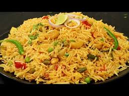
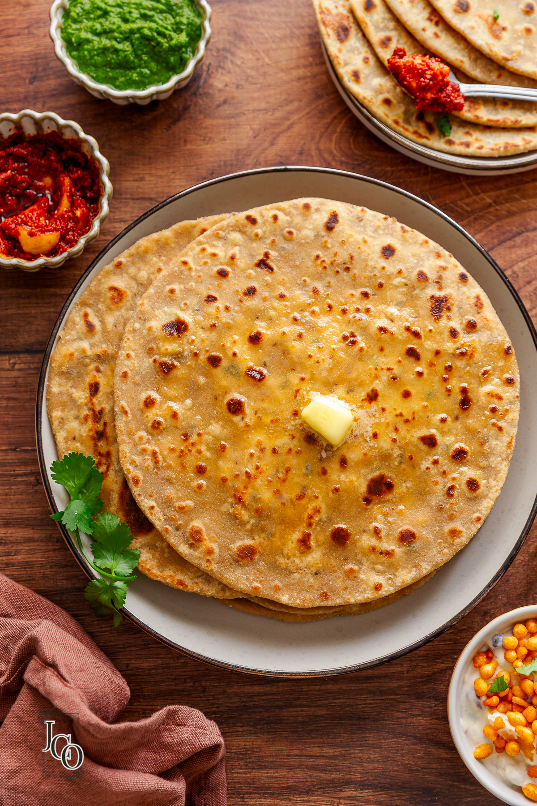
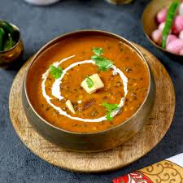
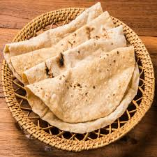

Veg Recipies

MASALA PULAO WITH 2 RAITAS
Masala Pulao With Two Types of Raita
Preparation time 10-15 minutes
Cooking time 25-30 minutes
Serve 2-4
For Ginger Green Chili Paste
½ inch Ginger, peeled, slice, अदरक
2 Green chilies (less spicy & cut into half) हरी मिर्च
Salt to taste, नमक स्वादअनुसार
For Masala Pulao
2 tbsp Ghee,
1 tbsp Oil, तेल
5-6 Black peppercorns, काली मिर्च के दाने
1 Black cardamom, बड़ी इलायची
½ inch Cinnamon stick, दालचीनी
1 Bay leaf, तेजपत्ता
½ tsp Cumin seeds, जीरा
4 medium Onion, sliced, प्याज
Prepared Ginger Green chili paste, अदरक हरी मिर्च का पेस्ट
2 medium Potato, peeled, cut into diced, आलू
2 medium Carrot, peeled, cut into diced, गाजर
1 medium Cauliflower, cut into florets, फूलगोभी
⅓ cup Curd, beaten, दही
½ tsp Turmeric powder, हल्दी पाउडर
1 tsp Degi red chili powder, देगी लाल मिर्च पाउडर
1 tsp Coriander powder, धनिया पाउडर
Salt to taste, नमक स्वादअनुसार
6-7 Cashewnut, काजू
1 ½ tsp Kewra water, केवड़ा
2 cups Water, पानी
Salt to taste, नमक स्वादअनुसार
6-7 French beans, chopped, फ्रेंच बींस
⅓ cup fresh Green peas, हरी मटर
3 cup Sella basmati rice (soaked for 20 minutes) सेला बासमती चावल
Water as required, पानी
For Bottle Gourd Raita
⅓ cup Curd, beaten, दही
½ medium Bottle gourd, peeled & grated, लौकी
1 Green chili (less spicy & finely chopped) हरी मिर्च
1 tbsp Coriander leaves, finely chopped, धनिया पत्ता
Salt to taste, नमक स्वादअनुसार
A pinch of degi red chili powder, देगी लाल मिर्च पाउडर
For Papad Raita
⅓ cup Curd, beaten, दही
1 medium Tomato, finely chopped, टमाटर
1 Green chili (less spicy & finely chopped) हरी मिर्च
Salt to taste, नमक स्वादअनुसार
A pinch of roasted cumin powder, भुना जीरा पाउडर
¼ tsp Degi red chili powder, देगी लाल मिर्च पाउडर
1-2 roasted Papad, crushed, पापड़
For Tadka
1 tbsp Ghee, घी
1 Green chili, slit, हरी मिर्च
½ medium Tomato, dice, टमाटर
5-6 Cashewnut, halves, काजू
A pinch of degi red chili powder, देगी लाल मिर्च पाउडर
Salt to taste, नमक स्वादअनुसार
For Garnish
Coriander Sprig, धनिया पत्ता
Process
For Ginger Green Chili Paste
In a mortar pestle, add ginger, green chili, salt to taste and make a coarse paste.
Keep it aside for further use.
For Masala Pulao
In a handi, add oil, ghee, once it’s hot, add black peppercorns, black cardamom, cinnamon stick, bay leaf, cumin seeds and let it splutter well.
Add onions and saute it until light golden brown in color.
Add prepared ginger green chili paste and saute it for 1-2 minutes on moderate heat.
Add potatoes, carrots, cauliflower and saute for a while.
Add curd, turmeric powder, degi red chili powder, coriander powder and saute for a few minutes.
Add salt to taste, cashewnut, kewra water and mix well.
Add water, salt to taste, french beans, green peas and mix it well.
Now, add sella basmati rice, water and mix.
Cover it with the lid and cook on moderate heat for at least 15-20 minutes.
Once the rice gets cooked well, turn off the flame and keep it aside for resting.
Transfer it into a serving dish with prepared raitas and garnish it with prepared tadka and coriander sprig.
For Tadka
In a shallow pan, add ghee, once it's hot, add green chili, tomato, cashewnut and saute it on moderate flame.
Add degi red chili powder, salt to taste and mix well.
Pour the tadka on top of the masala pulao.
For Bottle Gourd Raita
In a bowl, add curd, bottle gourd, green chili, coriander leaves, salt to taste and mix everything well.
Transfer it into a serving bowl. Sprinkle a pinch of degi red chili powder on it.
For Papad Raita
In a bowl, add curd, tomato, green chili, salt to taste, roasted cumin powder, degi red chili powder and mix well. Top it up with roasted crushed papad.
Transfer it into a serving bowl, garnish it with coriander sprig.
***********************
For more fantastic recipes, check out the Ranveer Brar App:
📲𝐀𝐧𝐝𝐫𝐨𝐢𝐝 - http://bit.ly/RBAppAndroid
📲𝗶𝗢𝗦 - http://bit.ly/RBAppiOS

SOUTH INDIAN STYLE DAL TADKA
Preparation time 10 minutes
Cooking time 20-25 minutes
Serve 2-4
Ingredients
For Cooking Dal
1 cup Toor dal, washed, तूर दाल
1 heaped tbsp Urad dal, washed, उड़द दाल
6-7 cups Water, पानी
Salt to taste, नमक स्वादअनुसार
1 tsp Degi red chili powder, देगी लाल मिर्च पाउडर
½ tsp Turmeric powder, हल्दी पाउडर
¼ tsp Asafoetida, हींग
For Ginger Garlic Paste
1 inch Ginger, peeled, slice, अदरक
2-4 Garlic cloves, लहसुन
2 Green chillies, broken into half, हरी मिर्च
For Tadka
1 tbsp Oil, तेल
2-4 Fenugreek seeds, मेथी दाना
Prepared Ginger Garlic Paste, अदरक लहसुन का पेस्ट
½ cup Shallots or 1 medium onion, chopped, सांभर प्याज
1 sprig Curry leaves, करी पत्ते
¼ tsp Turmeric powder, हल्दी पाउडर
¼ tsp Degi red chili powder, देगी लाल मिर्च पाउडर
½ tsp Coriander powder, धनिया पाउडर
1 medium Tomato, chopped, टमाटर
Boiled Dal, उबली हुई दाल
Salt to taste, नमक स्वादअनुसार
1 sprig Curry leaves, roughly torn, करी पत्ते
For Second Tadka
2-3 tbsp Ghee, घी
1 ½ tsp Cumin seeds, जीरा
9-10 Button chillies, बटन मिर्च
¼ tsp Asafoetida, हींग
¼ tsp Degi red chili powder, देगी लाल मिर्च पाउडर
For Rice Tadka
1 tsp Ghee, घी
1 tsp Cumin seeds, जीरा
¼ tsp Asafoetida, हींग
1 tbsp Coriander leaves, chopped, धनिया पत्ता
For Garnish
Coriander sprig, धनिया पत्ता
Process
For Cooking Dal
In a pressure cooker, add water, toor dal, urad dal, salt to taste, degi red chili powder, turmeric, asafoetida and cook it for 2-3 whistles or until the dal is soft.
Mash it with the help of ladle
Keep it aside for further use.
For Ginger Garlic Paste
In a mortar pestle, add ginger, garlic, green chillies and make a coarse paste.
Keep it aside for further use.
For Tadka
In a pan, add oil, once it's hot, add fenugreek seeds, prepared ginger garlic paste and cook for a minute.
Add shallots and cook for 2-3 minutes or until translucent. Add curry leaves and cook.
Add turmeric powder, degi red chili powder, coriander powder, tomatoes, water and cook well.
Add cooked dal, add salt to taste, curry leaves and let it simmer for a while.
Transfer the dal to a serving bowl, add prepared second tadka and serve hot with tadka rice.
For second tadka
In a pan, add oil, once it's hot, add cumin seeds and let it splutter.
Add button red chillies, asafoetida, degi red chili powder and toss well.
Keep it aside for further use.
For Rice Tadka
In a small pan, add ghee, once it's hot, add cumin and let it splutter.
Add asafoetida, coriander leaves and cook for 20-30 sec.
Spread the tadka on top of the cooked rice.

MUSHROOM KALI MIRCH
Preparation time 10 minutes
Cooking time 25-30 minutes
Serve 2-4
Ingredients
For Boiling Mushrooms
Water as required, पानी
Salt to taste, नमक स्वादअनुसार
1 tbsp Vinegar, सिरका
600 gms Mushrooms (washed & trim the stems) मशरूम
For Gravy
2 tbsp Ghee, घी
½ inch Cinnamon stick, दालचीनी
1 no. Bay leaf, तेज़ पत्ता
Prepared curd mixture,तैयार किया हुआ दही का मिश्रण
10-12 no. Cashew Nuts, काजू
1 cup Water, पानी
Salt to taste, नमक स्वादअनुसार
1 tsp Sugar, चीनी
2-3 tsp Butter, cubed, मक्खन
2 no. Green chillies (less spicy & slit into middle) हरी मिर्च
¼ inch Ginger (peeled & sliced) अदरक
1 cup Water, पानी
Cooked mushrooms, पके हुए मशरूम
1 tsp Black peppercorns, crushed, कुटी हुई काली मिर्च
For Curd Mixture
2 ½ cups Curd, beaten, दही
1 tbsp Ginger Garlic paste, अदरक लहसुन का पेस्ट
For Kashmiri Pulao
1 tbsp Ghee, घी
½ inch Ginger (peeled & finely chopped) अदरक
1 no. Green chilli (less spicy & chopped) हरी मिर्च
1 medium Onion, roughly diced, प्याज
3 no. Apricots, chopped, खुबानी
3 no. Almonds, roughly chopped, बादाम
3 no. Cashew Nuts, roughly chopped, काजू
2 cups Cooked rice, पका हुआ चावल
For Garnish
Coriander sprig, धनिया पत्ता
Black peppercorns, crushed, कुटी हुई काली मिर्च
Chilli oil, मिर्च का तेल
Process
For Boiling Mushrooms
● In a handi, add water as required, salt to taste, vinegar, mushrooms and get a quick boil.
● Strain the mushroom and keep it aside for further use.
For Gravy
● In a bowl, add curd, ginger garlic paste and give it a good mix.
● In a handi, add ghee, one it's hot, add bay leaf cinnamon stick and let it splutter well.
● Add curd and saute it for 3-4 minutes until cooked well.
● Add cashew nuts, water, salt to taste, sugar, butter and boil it for 4-5 minutes until thickens.
● Take out the whole spice and blend it with the help of a hand blender until smooth.
● Add green chillies, ginger and cook it for a minute.
● Take out the whole spice, green chillies and keep it aside for further use.
● Add boiled mushroom and cook it well for 4-5 minutes until cooked well.
● Finish it with crushed black peppercorns and mix it well.
● Transfer it to a serving dish, garnish it with coriander , black peppercorns and chilli oil.
● Serve hot with kashmiri pulao.
For Kashmiri Pulao
● In a pan, add ghee once it's hot, add ginger, green chillies, onions, apricot, almonds, cashew and toss it for a minute until the onions are translucent.
● Add cooked rice and toss it well.
● Transfer it to a serving dish, garnish it with coriander sprig and pomegranate pearls.
***********************
For more fantastic recipes, check out the Ranveer Brar App:
📲𝐀𝐧𝐝𝐫𝐨𝐢𝐝 - http://bit.ly/RBAppAndroid
📲𝗶𝗢𝗦 - http://bit.ly/RBAppiOS
***********************

PANEER CHEESE PARATHA
Preparation time 10 minutes
Cooking time 15-20 minutes
Serve 2
Ingredients
For Dough
1 cup whole Wheat flour, गेहूं का आटा
¼ cup Refined flour, मैदा (optional )
Salt to taste, नमक स्वादअनुसार
¼ tsp Carom seeds, अजवायन
½ tsp Ghee, घी
Water for kneading, पानी
½ tsp Oil, तेल
For Stuffing
2 tbsp Coriander leaves, chopped, धनिये के पत्ते
1 inch Ginger, chopped, अदरक
1 medium size Onion, chopped, प्याज
2 Green chillies, chopped, हरी मिर्च
½ tsp Degi red chilli powder, देगी लाल मिर्च पाउडर
½ tsp Black peppercorns, crushed, काली मिर्च के दाने
200 grams Paneer (grated), पनीर
¼ cup Processed cheese or pizza cheese (grated), चीज़
½ tbsp Butter, मक्खन
For Instant Mango Pickle
2-3 tsp Oil, तेल
½ tsp Fennel seeds, सौंफ
¼ tsp Fenugreek seeds, मेथी दाना
¼ tsp Yellow split mustard seed,
1 ½ tsp Degi red chilli powder, देगी लाल मिर्च पाउडर
¼ tsp Turmeric powder, हल्दी पाउडर
½ cup Water, पानी
1 tsp Sugar, चीनी
1 tbsp Vinegar, सिरका
½ inch Ginger, slice, अदरक
4 medium size raw Mango, peeled, slice, कच्चा आम
Salt to taste, नमक स्वादअनुसार
A pinch of asafoetida, हींग
For Roasting
2-3 tsp Ghee,घी
Process
For the Dough
In a parat or bowl, add refined flour, whole wheat flour, carom seeds, and salt.
Add water as required and knead a soft dough. Cover it with a muslin cloth and set aside for 10-15 minutes.
For Stuffing
In a bowl, add coriander leaves, ginger, onion, green chillies, degi red chili powder, crushed black peppercorns, grated paneer, cheese and mix everything well and keep aside.
For Paratha
Divide the dough into equal portions and form small lemon sized balls.
Roll them into a flat round shape with a rolling pin and add the prepared stuffing in the center.
Roll into a lemon size ball, remove the excess dough and roll back into a round shape.
Heat a tawa, place the prepared paratha and roast on both sides for 30 seconds each.
Flip over and brush with ghee and roast till brown spots appear.
Serve hot with instant mango pickle or curd.
For Instant mango pickle
Process
In a saucepan, add oil once it gets hot, add fennel seeds, and fenugreek seeds let it splutter well.
Add yellow split mustard, degi red chilli powder, turmeric powder, water and mix well.
Add sugar, vinegar, ginger, raw mango pieces, salt to taste, a pinch of asafoetida mix well.
Cover it with a lid and cook it for 10-12 minutes on medium flame.
Once the mango turns soft, switch off the flame.
Enjoy it with the choice of Paratha.
***********************
For more fantastic recipes, check out the Ranveer Brar App:
📲𝐀𝐧𝐝𝐫𝐨𝐢𝐝 - http://bit.ly/RBAppAndroid
📲𝗶𝗢𝗦 - http://bit.ly/RBAppiOS
***********************
PANEER BUTTER MASALA
Preparation time 15 minutes
Cooking time 30-35 minutes
Serving 4
Ingredients
For Gravy
3 tbsp Ghee , घी
1 Bay leaf , तेजपत्ता
2 Green cardamom , हरी इलायची
3 Cloves , लॉन्ग
1 inch Ginger, chopped , अदरक
3 cloves Garlic, crushed , लहसुन
1 fresh Green chilli, cut in half , हरी मिर्च
2 medium Onions, sliced , प्याज
Curd Mixture , दही का मिश्रण
2 Dry Kashmiri red chillies, deseeded , सुखी कश्मीरी मिर्च
18 Cashew nuts , काजू
6 medium Tomatoes, cut in 8 pieces , टमाटर
Salt to taste , नमक स्वादानुसार
½ tsp Degi red chilli powder , देगी लाल मिर्च पाउडर
1 ½ cup Water , पानी
2-3 drops Kewra water , केवड़ा वाटर
For Curd Mixture
1 heaped tsp Degi red chilli powder , देगी लाल मिर्च पाउडर
1 heaped tsp Coriander powder , धनिया पाउडर
¼ tsp Turmeric powder , हल्दी पाउडर
3 tbsp Curd , दही
3 small cubes Butter , मक्खन
For Soaking Paneer
200 gm Paneer, cubes , पनीर
Warm salted water , गुनगुना नमकीन पानी
For Onion Tomato Masala
4 tbsp Butter , मक्खन
1 medium Onion, chopped , प्याज
½ tsp Degi red chilli powder , देगी लाल मिर्च पाउडर
1 medium Tomato, chopped , टमाटर
Other Ingredients
Prepared Gravy , तैयार की हुई ग्रेवी
1-2 tbsp Honey , शहद
2 tbsp Butter , मक्खन
1 tbsp Dried Fenugreek leaves , कसूरी मेथी
soaked Paneer , भीगोया हुआ पनीर
For Garnish
Fresh Curd , ताजा दही
Fresh Coriander leaves , धनिया पत्ता
Process
For Soaking Paneer
In a bowl add paneer and soak it in some warm salted water and keep aside for further use.
For Curd Mixture
In a bowl add degi red chilli powder, coriander powder, turmeric powder, curd, butter and mix everything properly and keep aside for further use.
For Gravy
In a kadai heat ghee and add bay leaf, green cardamom, cloves, ginger, garlic, green chilli, onion and saute them until translucent.
Now add curd mixture, dry kashmiri red chilli and continue cooking for 2-3 minutes or until it's fragrant.
Then add the cashew nuts, tomatoes, salt, degi red chilli powder and saute for 2 minutes on medium high heat.
Add the water then cover and cook for 10-12 minutes or until the tomatoes are soft.
Finish it with kewra water and switch off the flames, let it cool down and then grind it into a fine paste with a hand blender or mixture grinder. Keep aside for further use.
For Onion Tomato Masala Tempering
In a kadai heat butter and add onion saute until translucent then add degi red chilli powder then saute it for half a minute.
Now add tomatoes and cook until soft then pour the prepared gravy, butter, honey, dried fenugreek leaves and mix everything properly then bring it to a boil.
Add the soaked paneer without water and boil it for 4-5 minutes on medium heat.
Switch off the flames and serve hot and garnish with fresh curd and coriander leaves.
***********************

DHABA STYLE MIXED VEG
Preparation time 10-15 minutes
Cooking time 25-30 minutes
Serve 2-4
Ingredients
For Ginger Garlic Paste
6-7 Garlic cloves, लहसुन
1 inch Ginger, peeled, slice, अदरक
2-3 Green chili, less spicy, हरी मिर्च
Salt to taste, नमक स्वादअनुसार
For Dhaba Style Mix Veg
1 tbsp Oil, तेल
1 tsp Cumin seeds, जीरा
Prepared Ginger Garlic Paste, तैयार किया हुआ अदरक लहसुन का पेस्ट
3 medium size Onion, chopped, प्याज
½ tbsp Ghee, घी
1 ½ tbsp Coriander powder, धनिया पाउडर
½ tsp Turmeric powder, हल्दी पाउडर
1 tsp Kashmiri red chili powder, कश्मीरी लाल मिर्च पाउडर
3 medium size Tomato, chopped, टमाटर
1 tsp Ghee, घी
¼ cup Water, पानी
1 medium size Carrot, diced, गाजर
Little water, पानी
2 tbsp fresh Green peas, हरे मटर
⅓ cup Mushroom, cut into quarter, मशरूम
½ cup Cauliflower, florets, फुलगोभी
¼ cup Water, पानी
10-15 French beans, roughly chopped, फ्रेंच बींस
Little water, पानी
2-3 tbsp Paneer, cut into small cube, पनीर
¼ tsp Dry fenugreek leaves, crushed, कसूरी मेथी
1 tbsp Butter, cube, मक्खन
For Garnish
Paneer, grated, पनीर
A pinch of dry fenugreek leaves, crushed, कसूरी मेथी
Coriander sprig, धनिया पत्ता
Process
For Ginger Garlic Paste
In a mortar pestle, add garlic, ginger, green chili and salt to taste.
Crush into a smooth paste and keep it aside for further use.
For Dhaba Style Mix Veg
In a shallow kadai or handi, add oil once it's hot, add cumin seeds and let it splutter well.
Add ginger garlic paste and saute it well.
Add onion and stir it for 10-12 seconds on high flame, later add ghee and saute it for a while.
Once the onions are golden brown, add coriander powder, turmeric powder and saute it for a minute.
Now, add kashmiri red chili powder, tomatoes and saute it well.
Once the masala is cooked, add water and cook it for 5 minutes.
Now, add carrots and saute, once the carrots are cooked, add green peas, mushroom, french beans, cauliflower, water and mix well, cover it with the lid and let it cook for a while.
Add paneer, dried fenugreek leaves, butter and mix it well.
Once the vegetables are cooked properly. Transfer it to a serving dish.
Garnish with the grated paneer, dried fenugreek leaves and coriander sprig.
Serve hot with roti.
***********************
For more fantastic recipes, check out the Ranveer Brar App:
📲𝐀𝐧𝐝𝐫𝐨𝐢𝐝 - http://bit.ly/RBAppAndroid
📲𝗶𝗢𝗦 - http://bit.ly/RBAppiOS
***********************

PANEER TIKKA x 2 Ways
Preparation Time: 20 minutes
Cooking Time: 20 minutes
Serves: 2
Ingredients:-
For Marinade
½ cup yogurt
1 tbsp ginger garlic paste
1 tsp kasuri methi
1 tbsp mustard oil
Salt to taste
1 tsp carom seeds (ajwain)
1 tbsp roasted gram flour (besan)
1 tbsp degi mirch
1 tbsp Panchranga achaar paste
¼ tsp turmeric powder
½ cup green capsicum, cut in cubes
½ cup onions, cut in quarters
½ cup red bell peppers, cut in cubes
350 gms Paneer, cut in cubes
For Tikka
1 tbsp mustard oil
2 tbsp butter
Kasuri methi for garnish
Charoal
1 tbsp ghee
Process:-
• Add yogurt, ginger garlic paste, kasuri methi and mustard oil in a bowl and add mix well.
• Add salt and carom seeds, mix well. Add roasted gram flour and mix well.
• Note: If the yogurt is not sour, add some lemon juice and if the yogurt is sour you can use it as is. This marinade can be used for any and every type of Paneer Tikka as explained in the video.
• Divide the prepared mixture into two parts, in one part add degi mirch for Paneer Tikka and mix well. Set aside till in use.
• In the other half the marinade add panchranga achaar paste for Achari Paneer Tikka along with some turmeric powder and mix well.
• To both the prepared marinades, add green capsicum, onions, red bell peppers and cubed Paneer, mix and coat well.
• Skewer the vegetables and paneer and set aside till in use.
• Heat mustard oil on a grill pan till smoking point and add some butter, roast the prepared paneer tikka skewers on the grill pan.
• Bast with butter and cook from all sides.
• Transfer the cooked tikka to the serving plate, place hot coal in a bowl next to the tikka, pour ghee on top and cover the tikkas for 2 minutes to smoke.
• Garnish with kasuri methi and serve hot with choice of dip/sauce/chutney.
***********************
For more fantastic recipes, check out the Ranveer Brar App:
📲𝐀𝐧𝐝𝐫𝐨𝐢𝐝 - http://bit.ly/RBAppAndroid
📲𝗶𝗢𝗦 - http://bit.ly/RBAppiOS
***********************

PURAN POLI
Preparation time 10-15 minutes
Cooking time 30-40 minutes
Serve 2-4
Ingredients
For Dough
2 cups Refined flour, मैदा
1 cup Whole wheat flour, गेहूं का आटा
Salt to taste, नमक स्वादअनुसार
Water as required, पानी
¼ tsp Turmeric powder, हल्दी पाउडर
1 tbsp Oil, तेल
1 ½ tsp Oil (for finishing) तेल
For Cooking Dal
2 cups Chana dal (soaked for 4-5 hrs) चना दाल
5-6 cups Water, पानी
Salt to taste, नमक स्वादअनुसार
1 tbsp Oil, तेल
½ tsp Turmeric powder, हल्दी पाउडर
For Vatan
¼ cup Oil, तेल
2 large Onions, sliced, प्याज
2 Green chillies (less spicy & roughly chopped) हरी मिर्च
1 tbsp Tender Coriander stems, roughly chopped, धनिया के डंठल
½ inch Ginger (peeled & roughly sliced) अदरक
2-4 no. Garlic cloves, लहसुन
Salt to taste, नमक स्वादअनुसार
¼ cup Dry coconut, grated, सूखा नारियल
1 tbsp Cumin seeds, जीरा
1 heaped tbsp Coriander seeds, धनिये के बीज
5-6 no. Green cardamom, हरी इलायची
1 inch Cinnamon stick, दालचीनी
3-4 no. Bay leaf, तेज पत्ता
5-6 no. Cloves, लौंग
1 tbsp Black peppercorns, काली मिर्च के दाने
For Katachi Amti
Remaining lentil water, बचा हुआ दाल का पानी
½ cup Cooked dal, पकी हुई चना दाल
Prepared Vatan, तैयार किया हुआ पेस्ट
Prepared Tadka, तैयार किया हुआ तड़का
2 tbsp Coriander leaves, chopped, धनिया पत्ता
For Tadka
2-3 tbsp Oil, तेल
2 sprig Curry leaves, करी पत्ते
1 ½ tbsp Degi red chili powder, देगी लाल मिर्च पाउडर
¼ cup Water, पानी
1 heaped tbsp Tamarind pulp, इमली का गूदा
1 tbsp Jaggery, गुड़
For Puran
2 cups Cooked dal
1 ½ cups sugarcane Jaggery
1 tbsp Ghee
1 tbsp Ghee (Optional) घी
¼ tsp Cardamom powder
¼ tsp Nutmeg powder
1 tbsp Ghee (for finishing)
Other Ingredients
2-3 tbsp Oil, तेल
1-2 tsp Ghee (for roasting) घी
Process
For Dough
In a parat, add refined flour, whole wheat flour, salt to taste, water, turmeric powder, oil and knead it to semi soft dough.
Apply oil onto the dough and keep it aside for further use.
For Cooking Dal
In a pressure cooker, add chana dal, water, salt to taste, oil, turmeric powder and mix it well.
Cover it with the lid and cook till 3-4 whistles or until cooked well.
Strain the water, mash the cooked chana dal with the help of the strainer and keep it aside for further use.
For Vatan
In a pan, add oil, once it's hot, add onions, green chillies, coriander stems, ginger, garlic, salt to taste and saute it for 2-3 minutes until the onions are translucent.
Add dry coconut, saute it for a minute and transfer it to a tray.
In the same pan, add cumin seeds, coriander seeds, green cardamom, cinnamon stick, cloves, bay leaf, black peppercorns, dry roast it for a minute and transfer it in the same tray.
Transfer it to a mixer grinder jar and grind it into a smooth paste.
Keep it aside for further use.
For Katachi Amti
In a handi, add remaining dal water, cooked dal, prepared vatan and mix it well.
Cook it for 10-12 minutes on low to medium flame.
Add prepared tadka and let it simmer for a while.
Finish it with some coriander leaves and transfer it to a serving bowl.
Serve hot along with prepared puran poli, ghee and jaggery.
For Tadka
In a pan, heat oil, add curry leaves, degi red chili powder and saute for a minute.
Add water, tamarind paste, jaggery and let it cook until jaggery melts.
Keep it aside for further use.
For Puran
In a kadai, add cooked dal, jaggery, ghee and cook it for 15-20 minutes or until thickens on medium flame.
Transfer it on the strainer and strain it well for a smooth mixture.
Add ghee, cardamom powder, nutmeg powder, ghee and mix it well.
Keep it aside for further use.
For Roasting Puran Poli
On a table top, apply a generous amount of oil, take the small ball of dough and spread it evenly.
Stuff with the prepared mixture and close the edges.
Spread the puran poli gently with the help of hands and keep it aside for further use.
In a tawa, heat ghee, place prepared poli and cook well on both sides until it's golden in color.
Transfer it to a serving dish, serve along with prepared katachi amti, ghee and jaggery.
Serve hot.
***********************

DHABA STYLE DAL MAKHANI
Preparation time 5-10 minutes
Cooking time 25-30 minutes
Serve 2-4
Ingredients
For Cooking Dal
1 ½ tbsp Ghee, घी
½ cup Kidney beans (washed & soaked overnight) राजमा
3 cups Whole Black Gram (washed & soaked overnight) साबुत उड़द की दाल
¼ cup Chana dal (washed & soaked overnight) चना दाल
5-6 cups Water, पानी
1 tbsp Garlic juice, लहसुन का पानी
1 ½ tsp Degi red chili powder, देगी लाल मिर्च पाउडर
¼ tsp Turmeric powder, हल्दी पाउडर
1 tsp Coriander powder, धनिया पाउडर
Salt to taste, नमक स्वादअनुसार
2 tbsp Unsalted butter, cubed, सफ़ेद मक्खन
For Ginger Garlic Paste
5-6 Garlic cloves, लहसुन
1 inch Ginger, peeled, slice, अदरक
1 Green chili (less spicy & broken into half) हरी मिर्च
Salt to taste, नमक स्वादअनुसार
1 ½ tsp Oil, तेल
For Masala
½ tsp Cumin seeds, जीरा
10-12 Black peppercorns, काली मिर्च के दाने
Salt to taste, नमक स्वादअनुसार
1 tsp Dry fenugreek leaves, कसूरी मेथी
For Tempering
1 ½ tbsp Ghee, घी
Prepared Ginger Garlic paste, अदरक लहसुन का पेस्ट
1 tsp Degi red chili powder, देगी लाल मिर्च पाउडर
A pinch of asafoetida, हींग
½ cup fresh Tomato puree, ताज़े टमाटर की प्यूरी
Salt to taste, नमक स्वादअनुसार
Boiled Dal, उबली हुई दाल
2 tbsp Unsalted butter (for finishing) सफ़ेद मक्खन
1 tsp Prepared Masala, तैयार किया हुआ मसाला
½ tsp Dry fenugreek leaves, crushed, कसूरी मेथी
For Garnish
Fresh cream, ताजा क्रीम
Coriander sprig, धनिया पत्ता
Process
For Cooking Dal
In a pressure cooker, add ghee, once it's hot, add kidney beans, whole black urad dal, chana dal.
Add water as required, garlic juice, degi red chili powder, turmeric powder, coriander powder.
Add salt to taste and unsalted butter mix everything well.
Cover it with the lid and cook on medium flame for 4 to 5 whistles or until the dal is 80 % cooked.
For Ginger Garlic Paste
In a grinder jar, add garlic cloves, ginger, green chili, salt to taste, oil and grind into a smooth paste and keep aside for further use.
For Masala
In a pan, add cumin seeds, black peppercorns, salt to taste, dry fenugreek leaves and dry roast on medium flame for 2-4 minutes.
Transfer it into a grinder jar and grind into a fine powder and keep aside for further use.
For Tempering
In a heavy bottom pot, add ghee, once it's hot, add prepared ginger garlic paste and saute it well.
Add degi red chili powder, a pinch of asafoetida and saute well.
Add fresh tomato puree, salt to taste and saute well on medium flame for 4-5 minutes.
Add boiled dal and cover it with the lid and cook for 5-10 minutes on medium flame.
Stir in between, with the help of a ladle mas the dal.
Remove the lid, finish it with unsalted butter and mix well, add prepared masala, dry fenugreek leaves and give it a last boil and switch off the flame.
Transfer it into a serving bowl, garnish it with fresh cream, coriander sprig and serve hot with steam rice.
***********************
For more fantastic recipes, check out the Ranveer Brar App:
📲𝐀𝐧𝐝𝐫𝐨𝐢𝐝 - http://bit.ly/RBAppAndroid
📲𝗶𝗢𝗦 - http://bit.ly/RBAppiOS
***********************

LIQUID DOUGH PARATHA
Preparation time 10 minutes
Cooking time 15-20 minutes
Serving 4
Ingredients
For Liquid Dough (With Ghee)
1 cup Whole wheat flour , आटा
2 tbsp Coriander leaves, chopped , धनिया पत्ता
1 tsp Ginger-Garlic paste , अदरक लहसुन का पेस्ट
Salt to taste , नमक स्वादानुसार
1½ cup Water , पानी
¼ tsp Turmeric powder , हल्दी पाउडर
1 tbsp Ghee , घी
For Without Ghee Liquid Dough
1 cup Whole wheat flour , आटा
Salt to taste , नमक स्वादानुसार
1½ cup Water , पानी
For Paratha Dough
1 cup Whole wheat flour , आटा
Salt to taste, नमक स्वादानुसार
½-¾ cup Water , पानी
1 tbsp Ghee , घी
A pinch Carom seeds , अजवाइन
1 tsp Ghee , घी
A pinch Degi red chilli powder , देगी लाल मिर्च पाउडर
½ tbsp Ghee for frying , घी
Process
For With Ghee Liquid Dough
In a bowl, add whole wheat flour, coriander leaves, ginger garlic paste, salt to taste.
Add Water, turmeric powder and ghee whisk well.
Rest the batter for five minutes.
Heat a non-stick pan, pour prepared batter with the ladle & spread evenly.
Cook on low flame until it changes color then flip and cook from the other side.
For Without Ghee Liquid Dough
In a bowl, add whole wheat flour, salt to taste and water whisk it well.
Rest the batter for five minutes.
Heat a non-stick pan, pour prepared batter with the ladle & spread evenly.
Cook on low flame until it changes color then flip and cook from the other side.
For Paratha Dough
In a parat, add whole wheat flour, salt to taste, water and knead a semi soft dough.
Add some ghee and knead it again, cover it with muslin cloth and keep it aside for future use.
Roll the paratha in a round shape and sprinkle some carom seeds, ghee, degi red chilli powder.
Fold it into a book fold and roll it again to a square shape.
Gently press and keep rotating the paratha on the pan. Cook for 1 minute, drizzle a little ghee on top and flip.
Cook for one minute while gently pressing. Make sure to press the edges as that part takes more time to cook. Flip and cook for a minute and continue flipping and cooking until you see golden brown spots all over. Take it off the pan.
Serve hot.
**********************************************
For more fantastic recipes, check out the Ranveer Brar App:
📲𝐀𝐧𝐝𝐫𝐨𝐢𝐝 - http://bit.ly/RBAppAndroid
📲𝗶𝗢𝗦 - http://bit.ly/RBAppiOS